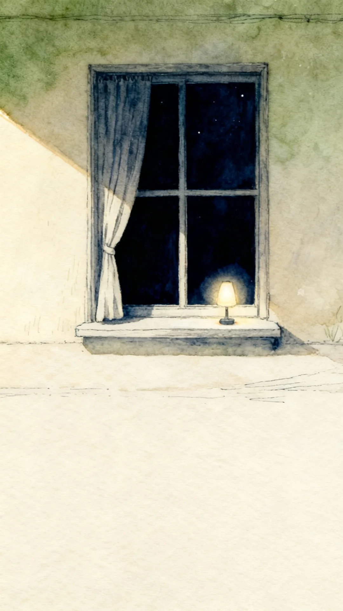

하고 있는 일
쓴 글
링커리어 취준 talk 전문 보관함 →
- 유튜브 부업 영상, 믿어도 되나요? — 간절함을 겨냥한 25분을 문장 단위로 뜯어봤습니다2026.09.04
- AI 전형, 회사가 답을 안 할 때 갈 수 있는 곳 네 군데를 확인했습니다2026.09.02
- AI 면접, 에어팟도 원룸 와이파이도 안 됩니다 — 응시 매뉴얼을 끝까지 읽어봤습니다2026.08.28
- AI 역량검사 결과, 회사에 물어볼 수 있는지 확인해봤습니다2026.08.26
- 잡코리아·잡다·잡케어 정리했더니 절반이 바뀌어 있었습니다2026.08.22
- AI 역량검사, 공고마다 조건이 달랐습니다 — 안 보면 지원 자체가 무효인 곳도 있었습니다2026.08.19
- 지원 버튼을 누르기 전에, 기업 AI가 먼저 프로필을 읽습니다2026.08.14
- [정보공유] AI 기본법 4부작 (1/4) — 채용 AI는 왜 법에서 '고영향'으로 분류됐을까2026.08.12
- [정보공유] AI 역량검사가 뭘 보는지 백서까지 찾아봤습니다2026.08.05
공존 노트 전문 보관함 →
- [공존 브리핑] 정부가 올해 AI 채용 솔루션을 조사합니다2026.09.02
- [공존 노트 5호] AI 채용, 기업은 왜 도입할까?2026.08.29
- [공존 브리핑] 자소서 없앤 SK하이닉스 공고, 실물을 열어봤습니다2026.08.26
- [공존 브리핑] 연습에도 카메라가 켜집니다2026.08.19
- [공존 노트 4호] AI는 내 표정과 목소리로 무엇을 판단할까?2026.08.15
- [공존 브리핑] 이제 기업의 AI가 먼저 당신을 찾아옵니다2026.08.12
- [공존 브리핑] 자기소개서를 없애는 회사가 나왔습니다2026.08.05
- [공존 노트 3호] AI 역량검사의 게임, 잘 풀어야 하는 시험일까?2026.08.01
- [공존 브리핑] '온라인 인적성' 뒤에 숨은 AI 검사2026.07.29
- [공존 브리핑] AI 역량검사, 오래 걸리고 매번 다르다2026.07.22
- [공존 노트 2호] AI 면접, 거부할 권리가 있을까?2026.07.18
- [공존 브리핑] 기업만 AI를 쓰는 게 아닙니다2026.07.15
- [공존 브리핑] 자소서 쓰는 것도 AI, 잡아내는 것도 AI2026.07.08
- [공존 노트 1호]'AI 역량검사' 봤다면서, 그게 뭘 보는지 아세요?2026.07.02

연락
aicheck17@gmail.com제보·정정·협업 문의를 받습니다.